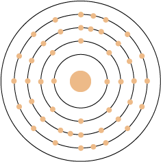
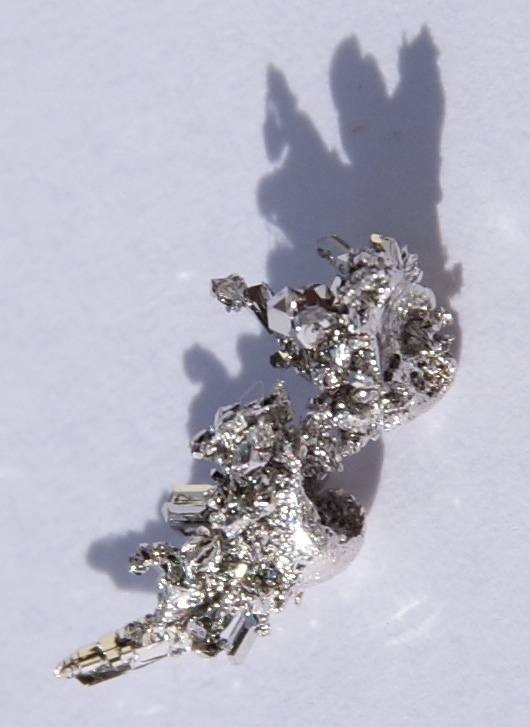
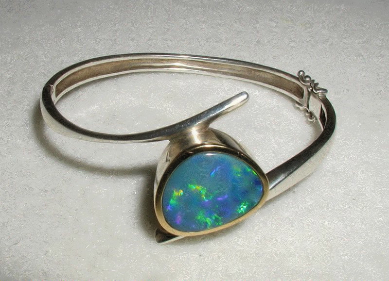
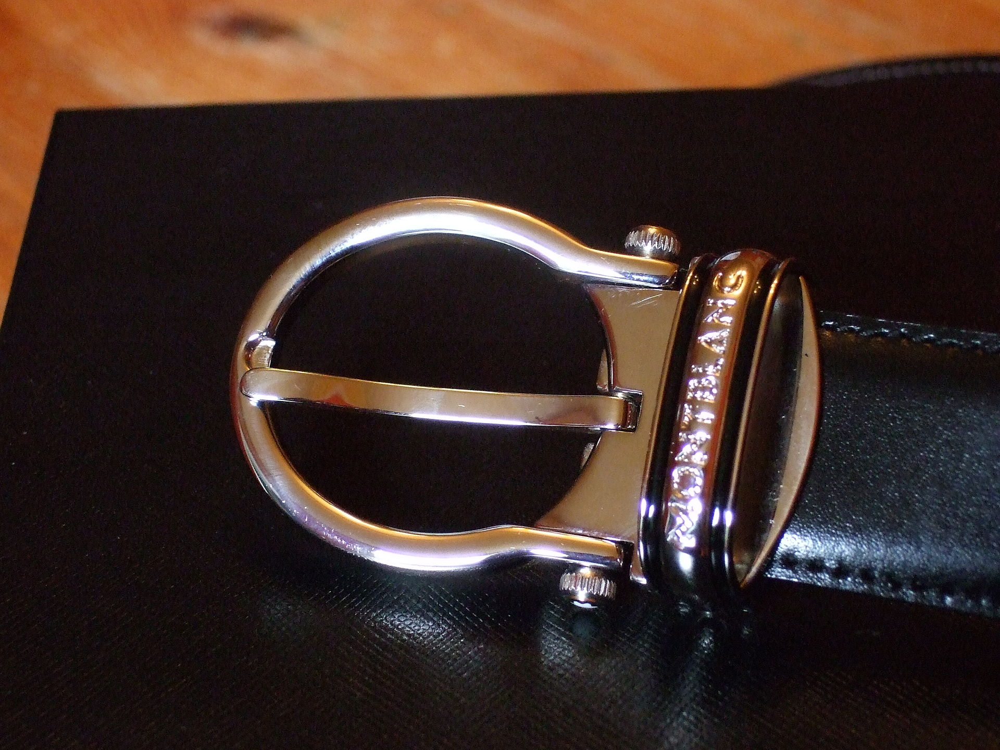
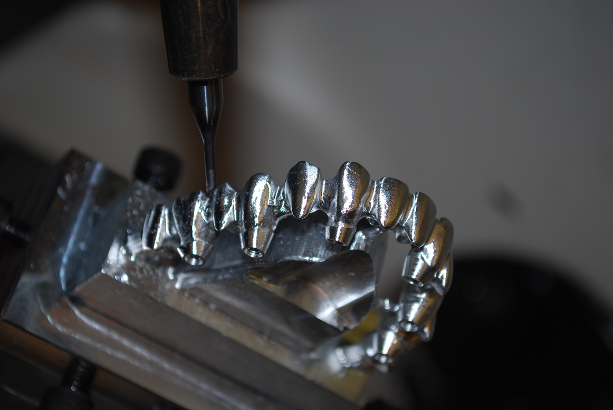

Name: Palladium
Formula: Pd
Atomic Number: 46
Group: 10
Block: d
Relative Atomic Mass: 106.42
Discovery Date: 1803
Appearance: A shiny, silvery-white metal
Uses: Catalytic converters, jewellery, dental fillings/crowns, ceramic capacitors.
Atomic Structure:2,8,18,18,0
    